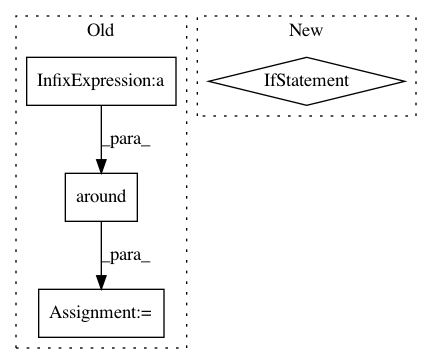

4a432c5225262f26517776aa865c4c8428d808ad,pynets/plotting/plot_graphs.py,,plot_conn_mat,#Any#Any#Any#Any#Any#Any#,17
Before Change
print("Connectivity matrix too sparse for plotting...")
if len(labels) > 150:
tick_interval = int(np.around(len(labels)/50))
else:
tick_interval = int(np.around(len(labels)))
plt.axes().yaxis.set_major_locator(mticker.MultipleLocator(tick_interval))
plt.axes().xaxis.set_major_locator(mticker.MultipleLocator(tick_interval))
After Change
sys.exit(0)
stream.close()
labels = [i[0][labeling_atlas] for i in labels]
try:
plot_matrix(
In pattern: SUPERPATTERN
Frequency: 3
Non-data size: 4
Instances
Project Name: dPys/PyNets
Commit Name: 4a432c5225262f26517776aa865c4c8428d808ad
Time: 2020-07-22
Author: dpisner@utexas.edu
File Name: pynets/plotting/plot_graphs.py
Class Name:
Method Name: plot_conn_mat
Project Name: AllenCellModeling/pytorch_fnet
Commit Name: ba30f0665150fe300e34be8117108f1fdd8fadbd
Time: 2017-06-19
Author: chek.o@outlook.com
File Name: models.py
Class Name: Model
Method Name: predict
Project Name: dPys/PyNets
Commit Name: 4a432c5225262f26517776aa865c4c8428d808ad
Time: 2020-07-22
Author: dpisner@utexas.edu
File Name: pynets/plotting/plot_graphs.py
Class Name:
Method Name: plot_community_conn_mat